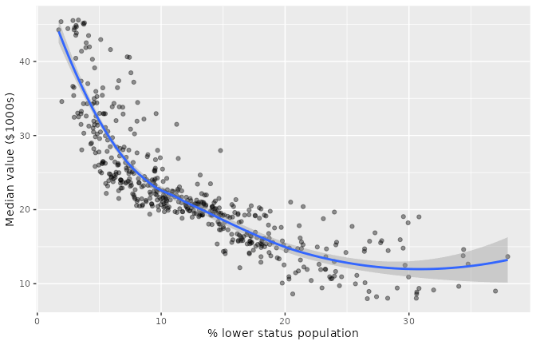
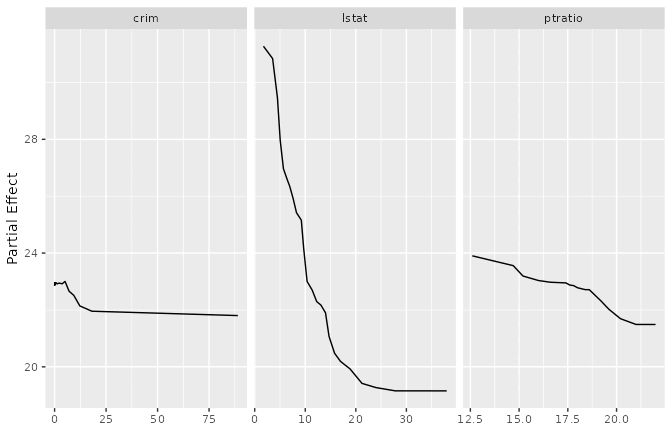
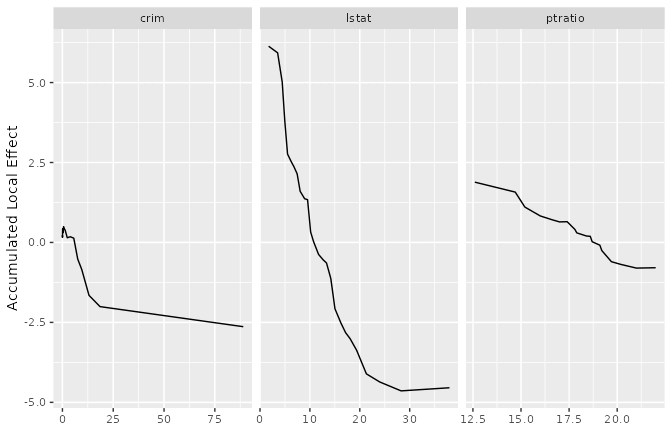
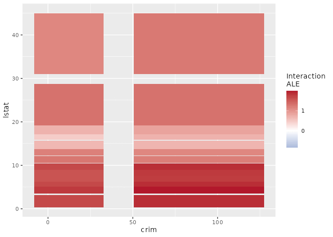
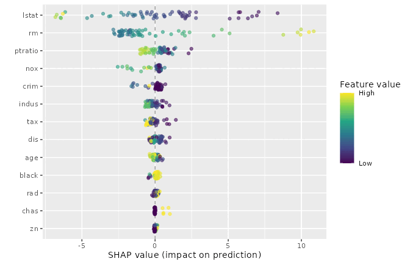
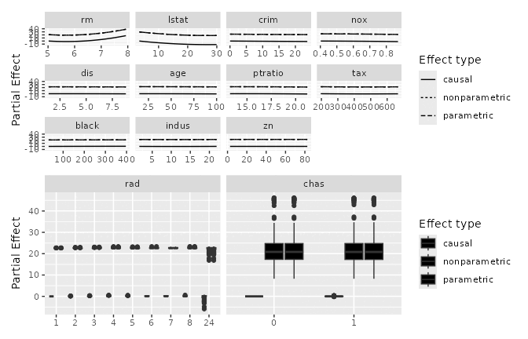

library(ggplot2)
# Try the installed package first, fall back to pkgload::load_all() for the
# R CMD check vignette rebuild where the package isn't yet on .libPaths().
if (requireNamespace("ggRandomForests", quietly = TRUE)) {
library(ggRandomForests)
} else if (requireNamespace("pkgload", quietly = TRUE)) {
pkgload::load_all(export_all = FALSE, helpers = FALSE,
attach_testthat = FALSE)
} else {
stop("Install ggRandomForests (or pkgload for dev builds) to render this vignette.")
}Explaining a forest: five views of a variable’s effect
2026-09-13
Source:vignettes/explainability.qmd
What does this variable do?
You have fit a forest, it predicts well, and now someone asks the obvious question: what is this variable actually doing? It is the question every applied analysis reaches eventually, and ggRandomForests gives you five different ways to answer it.
That is a problem, because the five answers are not interchangeable. They estimate different things. Read one as though it were another and you will report a number that is off by as much as a factor of two or three, with a figure that looks entirely reasonable.
This vignette puts them side by side on one forest. No one method wins; the point is to know which question you asked.
| Function | The question it answers |
|---|---|
gg_variable() |
What does the data look like? |
gg_partial_rfsrc() |
What does the forest predict as I move this variable, averaging over everything else? |
gg_ale_rfsrc() |
What does the forest predict as I nudge this variable locally? |
gg_shap() |
How much did this variable contribute to this one prediction? |
gg_partial_varpro() |
What does the effect look like inside varPro’s local rule neighborhoods? |
The data, and a forest
Boston housing: 506 census tracts, median home value (medv) against thirteen predictors. It is a stock dataset, it ships with MASS, and its predictors are correlated in the way real data is correlated, which turns out to matter a great deal.
data(Boston, package = "MASS")
set.seed(20260909L)
rfsrc_boston <- randomForestSRC::rfsrc(medv ~ ., data = Boston, ntree = 500)
rfsrc_boston Sample size: 506
Number of trees: 500
Forest terminal node size: 5
Average no. of terminal nodes: 66.736
No. of variables tried at each split: 5
Total no. of variables: 13
Resampling used to grow trees: swor
Resample size used to grow trees: 320
Analysis: RF-R
Family: regr
Splitting rule: mse *random*
Number of random split points: 10
(OOB) R squared: 0.86046646
(OOB) Requested performance error: 11.80268521Before going further, look at how tangled the predictors are. This is the fact the rest of the vignette hangs on.
pred <- setdiff(names(Boston), "medv")
cm <- cor(Boston[, pred])
diag(cm) <- NA
head(sort(abs(cm["tax", ]), decreasing = TRUE), 3) rad indus nox
0.9102282 0.7207602 0.6680232 Property tax rate and highway accessibility move together at 0.91. There are essentially no high-tax tracts with poor highway access in this data, and no low-tax tracts with excellent access. Hold on to that.
What the data alone shows
gg_variable() is the honest starting point, and the one most often mistaken for something it isn’t. It plots the observed response against the observed predictor. No model is involved in the y-axis at all.
gg_dta <- gg_variable(rfsrc_boston)
plot(gg_dta, xvar = "lstat", alpha = 0.4) +
labs(y = "Median value ($1000s)", x = "% lower status population")
The downward trend is real, but it belongs to the data, not to the forest. Every variable correlated with lstat is folded into that slope. You cannot read it as “what happens if lstat changes”, because in this data lstat never changes on its own.
So we ask the model instead.
Averaging over everything else: partial dependence
Partial dependence takes the whole dataset, overwrites one column with a fixed value, scores every row, and averages the result. Then it does that again at the next value. What you get is the average prediction as a function of that one variable, with the others integrated out.
pd <- gg_partial_rfsrc(rfsrc_boston,
xvar.names = c("crim", "lstat", "ptratio"),
n_eval = 25)
plot(pd)
This is the workhorse, and for a lot of problems it is exactly right. But notice what the recipe requires. To evaluate crim at its 95th percentile, partial dependence takes every tract in the data, including the leafy low-crime ones, and asks the forest to price them as though they had that crime rate while keeping all their other characteristics.
The neighborhood that doesn’t exist
In Boston that last step is literal.
To score tax at its maximum, partial dependence hands the forest a tract with the highest property tax rate in the state and the highway access of a low-tax suburb. No such tract exists. The forest has never seen one, so its answer there is an extrapolation dressed up as an average.
Accumulated local effects (Apley and Zhu 2020) avoid the problem by never building that tract. Instead of substituting a value across the whole dataset, ALE splits the variable into quantile bins and, inside each bin, asks only what happens when an observation moves from one edge of its own bin to the other. Everything else stays where it actually was. Those local differences are then accumulated across bins into a single curve and centered.
ale <- gg_ale_rfsrc(rfsrc_boston,
xvar.names = c("crim", "lstat", "ptratio"),
n_eval = 25)
plot(ale)
Same forest, same three variables, and the shapes are recognisably the same family. Look at the y-axes.
How different are they, really?
Different enough to change what you would report. Here both curves are put on a common grid and centered, so the comparison is about shape and size rather than offset.
compare <- function(v) {
a <- ale$continuous[ale$continuous$name == v, ]
p <- pd$continuous[pd$continuous$name == v, ]
lo <- max(min(a$x), min(p$x))
hi <- min(max(a$x), max(p$x))
grid <- seq(lo, hi, length.out = 100)
ay <- approx(a$x, a$yhat, xout = grid)$y
py <- approx(p$x, p$yhat, xout = grid)$y
ay <- ay - mean(ay)
py <- py - mean(py)
data.frame(
variable = v,
ale_range = round(diff(range(ay)), 2),
pd_range = round(diff(range(py)), 2),
pd_over_ale = round(diff(range(py)) / diff(range(ay)), 2)
)
}
do.call(rbind, lapply(c("crim", "lstat", "ptratio"), compare)) variable ale_range pd_range pd_over_ale
1 crim 3.06 1.17 0.38
2 lstat 10.77 12.12 1.12
3 ptratio 2.69 2.41 0.90On crim the two disagree by a lot, and they disagree in a consistent direction: partial dependence reports the smaller effect. That is not an accident of this fit. Across all eleven continuous predictors in Boston, averaged over three forests, ALE’s range exceeds partial dependence’s in nine of them, with a median ratio near 0.6.
Averaging over the joint distribution pulls the curve toward the overall mean, because a good part of what it averages is the forest’s opinion of tracts that do not exist, and the forest has no strong opinion about those. Partial dependence is not wrong here so much as diluted. If you read its y-axis as the size of the effect, you are understating it.
Two cautions before you conclude that ALE always wins. On ptratio the two methods agree closely, and on lstat partial dependence gives the larger range. The gap usually runs one way but not always, so check both before you report the size of an effect.
Where two variables act together
Second-order ALE has no partial dependence counterpart in this package. Give gg_ale_rfsrc() a second variable and it returns the part of the pair’s joint effect that neither variable’s own main effect explains.
ale_int <- gg_ale_rfsrc(rfsrc_boston, xvar.names = "crim",
xvar2.name = "lstat", n_eval = 12)
plot(ale_int)
Read it as a departure from additivity. White means the two variables act independently over that region: the joint effect is what you would get by adding their separate effects. Colour means they interact, and the sign tells you in which direction. A forest that is purely additive in a pair returns a surface that is zero everywhere.
One prediction at a time
Everything so far describes the model’s average behaviour. SHAP asks a different question entirely: for this tract, how much did each variable contribute to the number the forest produced?
if (!is.null(.pc$shap_boston)) {
shap_boston <- .pc$shap_boston
} else if (requireNamespace("kernelshap", quietly = TRUE)) {
set.seed(20260909L)
rows <- sort(sample(nrow(Boston), 60))
shap_boston <- gg_shap(rfsrc_boston,
newdata = rfsrc_boston$xvar[rows, , drop = FALSE],
bg_n = 30)
} else {
shap_boston <- NULL
}
if (!is.null(shap_boston)) plot(shap_boston)
Each point is one tract for one variable, positioned by its contribution and coloured by that tract’s value of the variable. The spread is the point. A variable whose points fan out wide matters a lot, but differently for different tracts, which is something no averaged curve can tell you.
One trap is worth naming. Averaging the absolute SHAP values gives you a ranking, and that ranking is an importance measure, not a shape. It answers “how much does this variable move predictions” and says nothing about which direction or where. Reach for gg_vimp() if ranking is what you want.
Two practical notes. gg_shap() needs kernelshap, which is a suggested dependency, so guard it as above if you are writing something others will run. And newdata takes predictors only. Handing it a frame that still carries the response fails inside kernelshap with a message about column names that mentions neither your column nor gg_shap().
Local by construction
varPro comes at the problem from a different direction (Lu and Ishwaran 2024). It builds rules that carve the predictor space into local regions, then estimates effects inside them. gg_partial_varpro() wraps varPro::partialpro() and returns per-subject curves rather than one averaged curve.
if (!is.null(.pc$pd_varpro)) {
pd_varpro <- .pc$pd_varpro
} else {
set.seed(20260909L)
v_boston <- varPro::varpro(medv ~ ., data = Boston, split.weight = FALSE)
pd_varpro <- gg_partial_varpro(object = v_boston)
}
plot(pd_varpro)
Because the estimate is local by construction, it shares ALE’s resistance to the non-existent-neighborhood problem, and it arrives there by a different route: varPro’s rules, rather than quantile bins.
Two estimands that are easy to confuse
On a classification fit gg_partial_varpro() has a scale argument that is worth understanding before you present a figure, because both settings are correct and they answer different questions.
partialpro() works internally on the log-odds scale and returns per-subject values. Collapsing those to one curve takes an average and a back-transform, and the order of those two steps is a modelling choice:
-
scale = "prob"transforms each subject, then averages. That is the mean predicted probability, the expected proportion of the cohort. -
scale = "prob_typical"averages on the log-odds scale, then transforms once. That is the probability for a subject at the mean log-odds.
They disagree, and by more the more heterogeneous your cohort is, because the inverse logit bends. On a real fit whose per-subject log-odds carried a standard deviation near 4.5, a point reading 0.96 under "prob_typical" read 0.74 under "prob". A figure captioned as a percentage of patients wants "prob". See ?gg_partial_varpro for the full argument.
Which one do you reach for?
| You want | Use | Read it as |
|---|---|---|
| To see the raw relationship | gg_variable() |
Data, confounded by everything correlated |
| The conventional marginal effect | gg_partial_rfsrc() |
An average, diluted where predictors are correlated |
| A marginal effect that does not extrapolate | gg_ale_rfsrc() |
Local changes accumulated, centered at zero |
| Whether two variables act together | gg_ale_rfsrc(xvar2.name =) |
Departure from additivity |
| Why one case got its prediction | gg_shap() |
Per-observation attribution |
| Effects inside local rule neighborhoods | gg_partial_varpro() |
Per-subject curves, mind the scale |
| A ranking, not a shape |
gg_vimp(), gg_varpro()
|
Importance |
A reasonable default: start with partial dependence because it is familiar and cheap, then check it against ALE on the variables you intend to report. Where they agree you can stop worrying. Where they disagree, the correlation structure is telling you something, and ALE is the one to trust.
What is not here
Survival forests. Both gg_ale_rfsrc() and gg_shap() are regression and classification only for now. Partial dependence covers survival; see the survival vignette.
Dependence without an outcome. gg_udependent() and gg_sdependent() describe how predictors relate to each other rather than to a prediction, which is a different question from the one this vignette asks. They need a uvarpro fit and are covered in the unsupervised varPro vignette.
Choosing variables. Everything here assumes you already know which variable you care about. For getting to that shortlist, see gg_vimp(), gg_minimal_depth() and the varPro vignette.
References
Apley, Daniel W., and Jingyu Zhu. 2020. “Visualizing the Effects of Predictor Variables in Black Box Supervised Learning Models.” Journal of the Royal Statistical Society Series B: Statistical Methodology 82 (4): 1059–86. https://doi.org/10.1111/rssb.12377.
Lu, M., and H. Ishwaran. 2024. “Model-Independent Variable Selection via the Rule-Based Variable Priority.” arXiv Preprint. https://arxiv.org/abs/2409.09003.